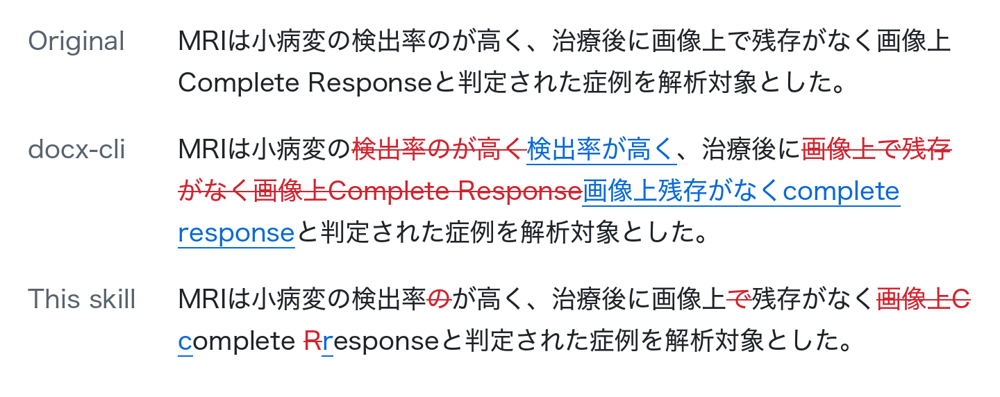

docx-redline-ja
A skill that writes AI proofreading results for Japanese text into a Word document as tracked changes. It diffs character by character, so each tracked change covers only the characters that changed.

The problem with Japanese
Ask an AI such as Claude to proofread a manuscript and the suggestions come back as chat text. Applying them by hand in Word takes a while, and afterward nobody can tell what was changed.
Tools that write suggestions as Word tracked changes exist, but most assume a language with spaces between words. Japanese has none, so everything up to the next punctuation mark is treated as one word, and fixing a single character deletes and reinserts all of it. The reviewer cannot see what was actually fixed.
docx-redline-ja diffs character by character. Each tracked change covers only the characters that changed, so the author can check and accept or reject each correction in Word's review pane.
What it does
- Reads a JSONL file of
old_text/new_textpairs and writes them into a copy of the .docx as native Word tracked changes. The original is never modified. - Before writing, checks that rejecting every change restores the original text and that other people's tracked changes are intact. If any check fails, nothing is written.
- Skips a finding that matches more than one place, and says why.
- Edits inside table cells and text boxes, and handles superscripts and subscripts such as reference numbers.
- Needs only Python 3.11+ and
lxml. It runs locally and sends no document content anywhere.
Benchmark: cost and tokens
Claude Code (Sonnet 5.5) was given a 40-paragraph document and 20 edit instructions and asked to produce the redlined .docx. Means of 3 runs.
| Language | Tool | Cost (USD) | Input tokens | Marked-up chars |
|---|---|---|---|---|
| Japanese | This skill | 0.060 | 51,933 | 1.0x minimum |
| Japanese | None (model alone) | 0.068 | 70,370 | 1.0x |
| Japanese | Anthropic's docx skill | 0.079 | 74,055 | 1.0x |
| Japanese | docx-cli | 0.080 | 92,508 | 28.1x |
| English | This skill | 0.060 | 56,726 | 1.0x |
| English | None (model alone) | 0.096 | 86,113 | 1.1x |
In both languages this skill used the least money and tokens of the four. Against the model alone it cost 12% less in Japanese and 37% less in English. The full table and method are in the README.
Install
Claude Code
/plugin marketplace add akchan/docx-redline-ja
/plugin install docx-redline-ja@docx-redline-jaCodex CLI
codex plugin marketplace add akchan/docx-redline-ja
codex plugin add docx-redline-ja@docx-redline-jaClaude Desktop (Cowork)
Open Customize in the sidebar, then Plugins. Select Add marketplace, enter akchan/docx-redline-ja, and install docx-redline-ja.
Usage
Once installed, ask the agent something like:
Proofread manuscript.docx, collect the findings in findings.jsonl, and apply
them with docx-redline-ja as tracked changes.Findings are JSONL, one per line. The script also runs on its own:
{"old_text":"所見がみられか？","new_text":"所見がみられるか？"}
python3 plugins/docx-redline-ja/skills/docx-redline-ja/scripts/apply_redline.py \
--docx manuscript.docx --findings findings.jsonl --out reviewed.docxWhat it does not do
- It does not proofread. An agent or a person decides what to change; this skill writes those decisions into the document.
- It edits body paragraphs only, not comments, headers, footers or footnotes.
- Each edit must stay within one paragraph.
- It does not add comments.